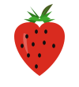
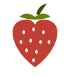
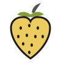

Палитра-кандидат варианта 2
Жёлто-голубая семейная + красные акценты. Все стопы взяты из расширенной палитры
Flexoki (stephango.com/flexoki, v2.0), база light («бумага»). Это заготовка до верстки:
утверждаем роли, потом стопы уезжают в CSS-переменные варианта 2.
База Flexoki light
ui-3#DAD8CE границы активн.
Жёлтый: основной семейный
Кандидат на главный бренд-цвет: заливки левых кнопок, шапочные выделения, бейджи. Текстовый жёлтый: 600 (#AD8301) у него контраст с бумагой достаточный для мелкого текста, 400 и ниже только для заливок и крупных элементов.
Голубой: второй семейный
Меню, ссылки, кнопка «О сорте», плитки чередования в левой колонке.
bl-600#205EA6 текст/кнопки
Красный: акценты
Цены, русские названия сортов (у SK так же: латиница серым, кириллица красным), флажок «новинка», кнопка «В корзину».
re-500#C03E35 КНОПКИ/ЦЕНЫ
Превью ролей (мини-макеты)
Шапка
К
Питомник клубникиМинск, рассада ЗКС
+375 29 ххх-хх-хх
Герой-карусель
Рассада клубники ЗКС в стаканчиках 0.4 л
Плантация на весь экран: фото поверх бумажного фона, подпись и точки поверх фото. Цвета с фото решат, нужны ли подложки.
Карточка рекомендуемого сорта
фото сорта 260×260
Albion / Альбион
2,50 руб стаканчик 0.4 л
УТВЕРЖДЕНО Владимиром 2026-11-01
1) ФОН: вариант B, ye-100 #F6E2A0. Панель/шапка ye-200 #ECCB60, карточки бумага #FFFCF0.
2) КНОПКИ: вариант 1 (чередование), жёлтый ye-200 #ECCB60, голубой bl-400 #4385BE.
3) Красный: сочный #C03E35 (re-500).
5) НОВИНКИ из левой колонки убраны.
4) НОВИНКИ из левой колонки убраны, остались 5 категорий клубники.
Фон сайта: жёлтая база, 2 варианта
Вариант A: ye-50 #FAEEC6
панель/шапка: ye-100 #F6E2A0
карточки: бумага #FFFCF0
текст #1C1B1A: контраст на #FAEEC6 достаточный (примерно 12:1)
Вариант B: ye-100 #F6E2A0
панель/шапка: ye-200 #ECCB60
карточки: бумага #FFFCF0
жёлтее и сочнее, но «бумажность» Flexoki теряется; проверить на телефоне дачника
Левые кнопки: насыщенные, 4 варианта (выбрать один)
Вариант 1: чередование жёлтый-голубой (300)
Вариант 2: всё жёлтое (300), голубая рамка
Вариант 3: глубже, 400 ступень
Вариант 4: светлые с сочной рамкой (прошлый макет)
Зелёный: для блока "Рекомендуемые" (прикидка)
Flexoki green: 50 #EDEECF, 100 #DDE2B2, 200 #BEC97E, 300 #A0AF54, 400 #879A39, 500 #768D21, 600 #66800B, 700 #536907. Три роли, можно комбинировать.
Роль 1: зелёные кнопки вместо голубых
Роль 2: светло-зелёный фон карточек
Роль 3: зелёный заголовок секции
Рекомендуемые сорта
Замечание: зелёный конфликтует с фотографией ягоды (ягода красная, листва зелёная), поэтому насыщенный зелёный лучше в кнопках и заголовках, светло-зелёный - в фонах. Выбери роль(и) или комбинацию.
Спрайты клубники: выбрать для шапки и матрицы
Один и тот же SVG используется в шапке (качается) и в матрице (падает). Выбор меняется заменой одного файла, код не переписывается.
A: berry.svg - мультяшный, яркий (сейчас в шапке)

B: berry-mid - мультяшный, чёрные семечки, аккуратнее (сейчас в матрице)

C: berry-flat - плоский, спокойный, в палитре сайта (red-500, семечки бумага)

D: berry-outline - жёлтое тело с контуром, гравюрный стиль
